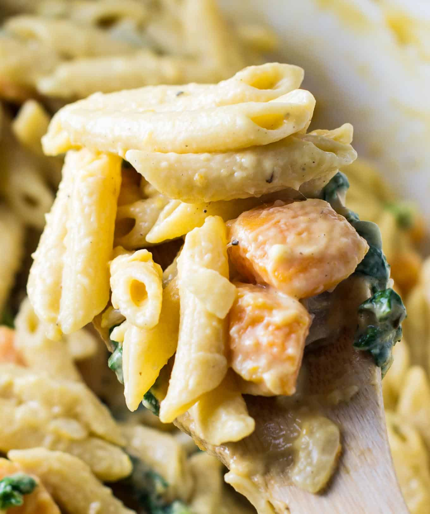

The Classic

Ingredients
- Brown Pasta
- Sweet Potato
- Broccoli
- Cabbage
- Baked Beans
Steps
- Weigh 75g~ of broccoli and 75g~ of cabbage
- Wash instruments and green vegetables
- Boil a litre of water in kettle while chopping
- Pour hot water into pot and turn hob up to max heat
- Put vegetables in steamer on top of pot and put lid on
- Once lid starts rattling turn heat down to minimum
- Wash and chop 200g~ of sweet potato into moderate chunks
- Weigh 75g~ of dry brown pasta
- Put sweet potato and pasta in same bowl
- Clean up chopping board and knife
- Take steamer off pot and empty sweet potato + pasta into pot of water
- Put steamer and lid back on top of pot and turn heat up to max
- Wait for pot to rattle then turn down to minimum
- Wait 10-12 minutes for food to cook
- In meantime open can of baked beans, empty half into tupperware for next time
- Keep other half of beans in can for now
- When cooking time is up turn hob off
- Empty greens into a bowl then use the steamer as a drainer for sweet potato and pasta
- Put sweet potato and pasta on a plate
- Empty beans from can (yes cold) onto the plate
- Eat